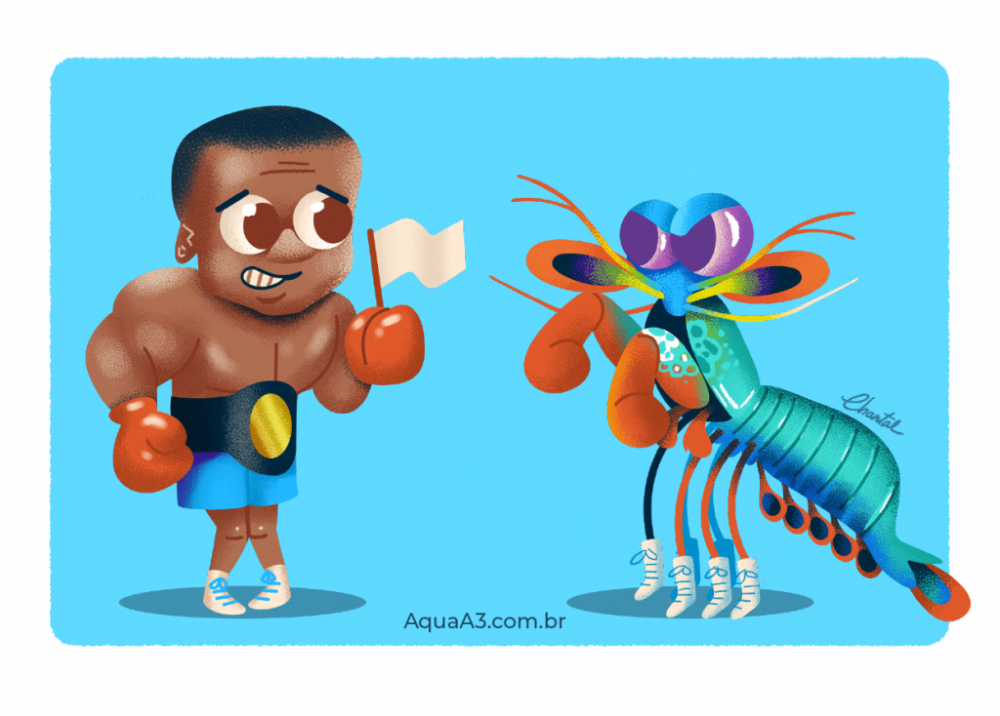

Fatos sobre o Stomatopoda
O camarão mantis é um crustáceo estomatópode, também conhecido como tamarutaca, lacraia-do-mar, lagosta-boxeadora ou camarão-louva-a-deus-palhaço "Dentre 400 espécies, o ‘ Odontodactylus scyllarus’ é o que desfere um golpe mais violento: seu soco chega a 80 quilômetros por hora, aceleração semelhante a uma arma calibre .22."
